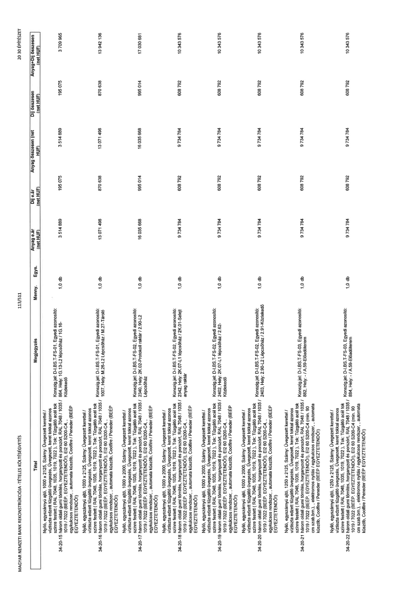

| Tétel | Megjegyzés | Menny. | Egys. | Anyag e.ár (net HUF) | Díj e.ár (net HUF) | Anyag összesen (net HUF) | Díj összesen (net HUF) | Anyag+Díj összesen (net HUF) |
|---|---|---|---|---|---|---|---|---|
| 34-20-15 Nyíló, egyszárnyú ajtó, 1000 x 2125, Szárny: Üvegezett kerettel / víztiszta edzett tűzgátló üvegezés, Üvegezett, keret tokkal azonos színre festett ( RAL 7048, 1035, 1019, 7022 ). Tok: Tűzgátló acél tok három oldali gumi tömítés, horganyzott és porszórt, RAL 7048 / 1035 / 1019 / 7022 (BÉÉP. EGYEZTETENDŐ!), EI2 60 S200-C4,, egykulcsos rendszer, , automata küszöb, Coolfire / Peneder (BÉÉP EGYEZTETENDŐ!) | Konszig.jel: D-I.BS.T-FS-01, Egyedi azonosító: 864, Hely: IG.13-L2 Lépcsőház / IG.16- Közlekedő | 1,0 | db | 3 514 869 | 195 075 | 3 514 869 | 195 075 | 3 709 965 |
| 34-20-16 Nyíló, egyszárnyú ajtó, 1000 x 2125, Szárny: Üvegezett kerettel / víztiszta edzett tűzgátló üvegezés, Üvegezett, keret tokkal azonos színre festett ( RAL 7048, 1035, 1019, 7022 ). Tok: Tűzgátló acél tok három oldali gumi tömítés, horganyzott és porszórt, RAL 7048 / 1035 / 1019 / 7022 (BÉÉP. EGYEZTETENDŐ!), EI2 60 S200-C4,, egykulcsos rendszer, , automata küszöb, Coolfire / Peneder (BÉÉP EGYEZTETENDŐ!) | Konszig.jel: D-I.BS.T-FS-01, Egyedi azonosító: 1007, Hely: M.26-L2 Lépcsőház / M.27-Tároló | 1,0 | db | 13 071 498 | 870 638 | 13 071 498 | 870 638 | 13 942 136 |
| 34-20-17 Nyíló, egyszárnyú ajtó, 1000 x 2000, Szárny: Üvegezett kerettel / víztiszta edzett tűzgátló üvegezés, Üvegezett, keret tokkal azonos színre festett ( RAL 7048, 1035, 1019, 7022 ). Tok: Tűzgátló acél tok három oldali gumi tömítés, horganyzott és porszórt, RAL 7048 / 1035 / 1019 / 7022 (BÉÉP. EGYEZTETENDŐ!), EI2 60 S200-C4,, egykulcsos rendszer, , automata küszöb, Coolfire / Peneder (BÉÉP EGYEZTETENDŐ!) | Konszig.jel: D-I.BS.T-FS-02, Egyedi azonosító: 2340, Hely: 2K.02-Protokoll raktár / 2.90-L2 Lépcsőház | 1,0 | db | 16 035 668 | 995 014 | 16 035 668 | 995 014 | 17 030 681 |
| 34-20-18 Nyíló, egyszárnyú ajtó, 1000 x 2000, Szárny: Üvegezett kerettel / víztiszta edzett tűzgátló üvegezés, Üvegezett, keret tokkal azonos színre festett ( RAL 7048, 1035, 1019, 7022 ). Tok: Tűzgátló acél tok három oldali gumi tömítés, horganyzott és porszórt, RAL 7048 / 1035 / 1019 / 7022 (BÉÉP. EGYEZTETENDŐ!), EI2 60 S200-C4,, egykulcsos rendszer, , automata küszöb, Coolfire / Peneder (BÉÉP EGYEZTETENDŐ!) | Konszig.jel: D-I.BS.T-FS-02, Egyedi azonosító: 2342, Hely: 2K.07-L1 Lépcsőház / 2K.01-Selejt anyag raktár | 1,0 | db | 9 734 784 | 608 792 | 9 734 784 | 608 792 | 10 343 576 |
| 34-20-19 Nyíló, egyszárnyú ajtó, 1000 x 2000, Szárny: Üvegezett kerettel / víztiszta edzett tűzgátló üvegezés, Üvegezett, keret tokkal azonos színre festett ( RAL 7048, 1035, 1019, 7022 ). Tok: Tűzgátló acél tok három oldali gumi tömítés, horganyzott és porszórt, RAL 7048 / 1035 / 1019 / 7022 (BÉÉP. EGYEZTETENDŐ!), EI2 60 S200-C4,, egykulcsos rendszer, , automata küszöb, Coolfire / Peneder (BÉÉP EGYEZTETENDŐ!) | Konszig.jel: D-I.BS.T-FS-02, Egyedi azonosító: 2402, Hely: 2K.07-L1 Lépcsőház / 2.62- Közlekedő | 1,0 | db | 9 734 784 | 608 792 | 9 734 784 | 608 792 | 10 343 576 |
| 34-20-20 Nyíló, egyszárnyú ajtó, 1000 x 2000, Szárny: Üvegezett kerettel / víztiszta edzett tűzgátló üvegezés, Üvegezett, keret tokkal azonos színre festett ( RAL 7048, 1035, 1019, 7022 ). Tok: Tűzgátló acél tok három oldali gumi tömítés, horganyzott és porszórt, RAL 7048 / 1035 / 1019 / 7022 (BÉÉP. EGYEZTETENDŐ!), EI2 60 S200-C4,, egykulcsos rendszer, , automata küszöb, Coolfire / Peneder (BÉÉP EGYEZTETENDŐ!) | Konszig.jel: D-I.BS.T-FS-02, Egyedi azonosító: 2403, Hely: 2.90-L2 Lépcsőház / 2.91-Közlekedő | 1,0 | db | 9 734 784 | 608 792 | 9 734 784 | 608 792 | 10 343 576 |
| 34-20-21 Nyíló, egyszárnyú ajtó, 1250 x 2125, Szárny: Üvegezett kerettel / víztiszta edzett tűzgátló üvegezés, Üvegezett, keret tokkal azonos színre festett ( RAL 7048, 1035, 1019, 7022 ). Tok: Tűzgátló acél tok három oldali gumi tömítés, horganyzott és porszórt, RAL 7048 / 1035 / 1019 / 7022 (BÉÉP. EGYEZTETENDŐ!), EI2 60 S200-C4 (min. 90 cm szab.bm.), elektromos nyílás / egykulcsos rendszer, , automata küszöb, Coolfire / Peneder (BÉÉP EGYEZTETENDŐ!) | Konszig.jel: D-I.BS.T-FS-03, Egyedi azonosító: 882, Hely: - / A.59-Előadóterem | 1,0 | db | 9 734 784 | 608 792 | 9 734 784 | 608 792 | 10 343 576 |
| 34-20-22 Nyíló, egyszárnyú ajtó, 1250 x 2125, Szárny: Üvegezett kerettel / víztiszta edzett tűzgátló üvegezés, Üvegezett, keret tokkal azonos színre festett ( RAL 7048, 1035, 1019, 7022 ). Tok: Tűzgátló acél tok három oldali gumi tömítés, horganyzott és porszórt, RAL 7048 / 1035 / 1019 / 7022 (BÉÉP. EGYEZTETENDŐ!), EI2 60 S200-C4 (min. 90 cm szab.bm.), elektromos nyílás / egykulcsos rendszer, , automata küszöb, Coolfire / Peneder (BÉÉP EGYEZTETENDŐ!) | Konszig.jel: D-I.BS.T-FS-03, Egyedi azonosító: 884, Hely: - / A.59-Előadóterem | 1,0 | db | 9 734 784 | 608 792 | 9 734 784 | 608 792 | 10 343 576 |
